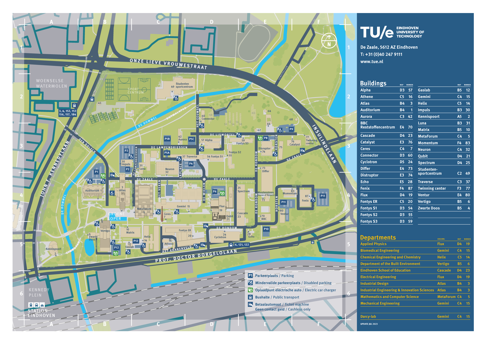
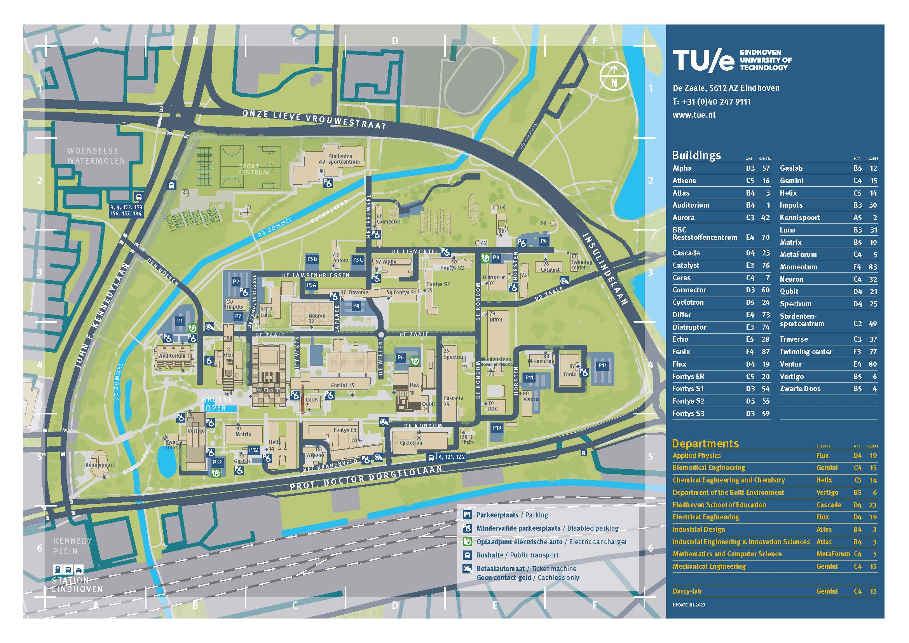
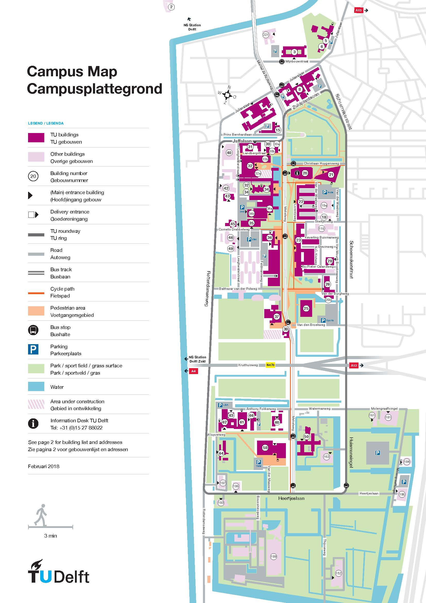

Survey on the Design of Campus Maps
Hello, and thank you for participating in this survey. My name is Josephine Spit and I am a Geomatics master's student at TU Delft.
I am conducting this survey as part of my Geomatics master's thesis. Your responses are greatly appreciated.
All data will be handled in compliance with European privacy legislation (GDPR), ensuring anonymity and exclusive use for research purposes, with data deletion upon completion of the thesis.
My thesis investigates the role of map users in the mapping process, and if/how different types of user participation influence the resulting map.
The survey consists of five parts:
- Part A: Some questions about yourself.
- Part B: Questions related to your experience and engagement with the TU Delft campus.
- Part C: Defining your use of a campus map.
- Part D: Rating different campus maps on their content and design.
- Part E: Comparing the different campus maps to determine which one best fits your needs.
The details will be explained along the survey.
This survey will take approximately 10-15 minutes.
Part A: Questions about you
* Required
1. What is your age? *
2. What is your gender? *
ManWoman
Non-Binary
Other
3. What is your connection with TU Delft? *
Bachelor StudentMaster Student
PhD
Employee
Alumnus
Visitor
Other
4. Where do you live? *
On TU Delft CampusDelft, off campus
Elsewhere in Zuid-Holland
Other
5. What is your nationality? *
Part B: Questions about your experience on campus
* Required
6. Open How often are you on campus? *
≥ 5 times a week1-4 times a week
Less than once a week
Never
Other:
7. What activities do you partake on campus? (multiple options possible) *
8. At which faculty are you studying/working, or have you studied/worked? *
Architecture and the Built EnvironmentCivil Engineering and Geosciences
Electrical Engineering, Mathematics and Computer Science
Industrial Design Engineering
Aerospace Engineering
Technology, Policy and Management
Applied Sciences
Mechanical Engineering
Other:
9. What kind of transportation mode do you use most often when travelling to and on campus? *
BikeCar
Public transport
Walking
Shared vehicles (eg.: Scooters)
Other:
10. Please share any specific aspects of your campus experience that you would like to highlight, such as the variety of facilities available, the accessibility of services, or something you would suggest to improve your experience on campus
Part C: Question about your use of a campus map
* Required
11. For which purpose would you use a campus map primarily? *
Navigating on campus (To find the best/asted route from A to B)
Learning new things about the campus or places
Other
Part D: Questions about your preferences for campus maps
Design and content
In this part you will be asked to rate the maps of 5 different campuses in the Netherlands. The following universities were chosen:
1. Delft University of Technology
2. Wageningen University & Research
3. Vrije Universiteit Amsterdam
4. Eindhoven University of Technology
5. Erasmus University Rotterdam
You will rate each map on its content and presentation.
click here to view the map
Delft Univeristy of Technology
Rate the map of Delft University of Technology on its content and presentation, keeping in mind the purpose a campus map has to you.
You can view the map at any moment by clicking the button in the top right corner.
Familiarity
12. To what extent are you familiar with this map? *
Content and organization
13. How would you rate the layout of the page? *
14. How would you rate the choice to display the map in 2D, with regards to the clarity of the map? *
15. Does this map contain the information you usually look for? *
Level of detail
16. To what extent is the scale of the map appropriate for the purpose of the map? *
The scale effectively covers the necessary area and level of detailIt is too zoomed in, therefore the area covered is too small
It is too zoomed out, therefore the level of detail is too low
Legend
17. How would you rate the completeness of information in the legend? *
18. How would you rate the clarity of the legend? *
Text
19. How would you rate the relevance of the text on the page? *
20. How would you rate the visualization of the text (size, font, color)? *
Use of color
21. How would you rate the use of color (eg. trees, roads, buildings) in making the map visually appealing? *
22. How would you rate the use of color in being appropriate for the elements they represent (eg trees, roads, buildings)? *
Use of symbols
23. How would you rate the choice of symbols in being appropriate for the elements they represent (eg. buildings, facilities)? *
24. How would you rate the impact of the symbols on the clarity of the map? *
click here to view the map

Wageningen University & Research
Rate the map of Wageningen University & Research on its content and presentation, keeping in mind the purpose a campus map has to you.
You can view the map at any moment by clicking the button in the top right corner.
Content and organization
25. How would you rate the layout of the page? *
26. How would you rate the choice to display the map in 3D, with regards to the clarity of the map? *
27. If this was your campus, how would you rate the completeness of information of this map? *
Level of detail
28. To what extent is the scale of the map appropriate for the purpose of the map? *
The scale effectively covers the necessary area and level of detailIt is too zoomed in, therefore the area covered is too small
It is too zoomed out, therefore the level of detail is too low
Legend
29. How would you rate the completeness of information in the legend? *
30. How would you rate the clarity of the legend? *
Text
31. How would you rate the relevance of the text on the page? *
32. How would you rate the visualization of the text (size, font, color)? *
Use of color
33. How would you rate the use of color (eg. trees, roads, buildings) in making the map visually appealing? *
34. How would you rate the use of color in being appropriate for the elements they represent (eg trees, roads, buildings)? *
Use of symbols
35. How would you rate the choice of symbols in being appropriate for the elements they represent (eg. buildings, facilities)? *
36. How would you rate the impact of the symbols on the clarity of the map? *
click here to view the map

Vrije Universiteit Amsterdam
Rate the map of Vrije Universiteit Amsterdam on its content and presentation, keeping in mind the purpose a campus map has to you.
You can view the map at any moment by clicking the button in the top right corner.
Content and organization
37. How would you rate the layout of the page? *
38. How would you rate the choice to display the map in 2D, with regards to the clarity of the map? *
39. If this was your campus, how would you rate the completeness of information of this map? *
Level of detail
40. To what extent is the scale of the map appropriate for the purpose of the map? *
The scale effectively covers the necessary area and level of detailIt is too zoomed in, therefore the area covered is too small
It is too zoomed out, therefore the level of detail is too low
Legend
41. How would you rate the completeness of information in the legend? *
42. How would you rate the clarity of the legend? *
Text
43. How would you rate the relevance of the text on the page? *
44. How would you rate the visualization of the text (size, font, color)? *
Use of color
45. How would you rate the use of color (eg. trees, roads, buildings) in making the map visually appealing? *
56. How would you rate the use of color in being appropriate for the elements they represent (eg trees, roads, buildings)? *
Use of symbols
57. How would you rate the choice of symbols in being appropriate for the elements they represent (eg. buildings, facilities)? *
58. How would you rate the impact of the symbols on the clarity of the map? *
click here to view the map
Eindhoven University of Technology
Rate the map of Eindhoven University of Technology on its content and presentation, keeping in mind the purpose a campus map has to you.
You can view the map at any moment by clicking the button in the top right corner.
Content and organization
59. How would you rate the layout of the page? *
60. How would you rate the choice to display the map in 2D, with regards to the clarity of the map? *
61. If this was your campus, how would you rate the completeness of information of this map? *
Level of detail
62. To what extent is the scale of the map appropriate for the purpose of the map? *
The scale effectively covers the necessary area and level of detail
It is too zoomed in, therefore the area covered is too small
It is too zoomed out, therefore the level of detail is too low
Legend
63. How would you rate the completeness of information in the legend? *
64. How would you rate the clarity of the legend? *
Text
65. How would you rate the relevance of the text on the page? *
66. How would you rate the visualization of the text (size, font, color)? *
Use of color
67. How would you rate the use of color (eg. trees, roads, buildings) in making the map visually appealing? *
68. How would you rate the use of color in being appropriate for the elements they represent (eg trees, roads, buildings)? *
Use of symbols
69. How would you rate the choice of symbols in being appropriate for the elements they represent (eg. buildings, facilities)? *
70. How would you rate the impact of the symbols on the clarity of the map? *
click here to view the map

Erasmus Univeristy Rotterdam
Rate the map of Erasmus University Rotterdam on its content and presentation, keeping in mind the purpose a campus map has to you.
You can view the map at any moment by clicking the button in the top right corner.
Content and organization
71. How would you rate the layout of the page? *
72. How would you rate the choice to display the map in 3D, with regards to the clarity of the map? *
73. If this was your campus, how would you rate the completeness of information of this map? *
Level of detail
74. To what extent is the scale of the map appropriate for the purpose of the map? *
The scale effectively covers the necessary area and level of detailIt is too zoomed in, therefore the area covered is too small
It is too zoomed out, therefore the level of detail is too low
Legend
75. How would you rate the completeness of information in the legend? *
76. How would you rate the clarity of the legend? *
Text
77. How would you rate the relevance of the text on the page? *
78. How would you rate the visualization of the text (size, font, color)? *
Use of color
79. How would you rate the use of color (eg. trees, roads, buildings) in making the map visually appealing? *
80. How would you rate the use of color in being appropriate for the elements they represent (eg trees, roads, buildings)? *
Use of symbols
81. How would you rate the choice of symbols in being appropriate for the elements they represent (eg. buildings, facilities)? *
82. How would you rate the impact of the symbols on the clarity of the map? *
Part E: Comparing the maps
* Required
Compare the maps
83. Please rank the campus maps from best (top) to worst (bottom), for how well the maps serves this purpose *
-
Wageningen University & Research
-
Vrije Universiteit Amsterdam
-

Eindhoven University of Technology
-
Erasmus Universiteit Rotterdam
-

Delft University of Technology
Thank you for participating in this survey!
Your responses are greatly appreciated and will be used for research purposes only.
If you would like to stay up to date with the results, or have time to participate in a follow-up interview, please leave your email address below.
For any questions please contact me at j.l.spit@student.tudelft.nl